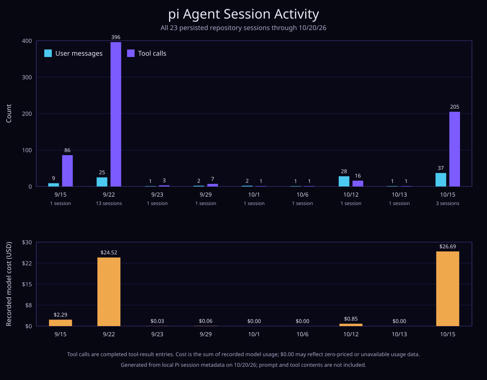

Dev Log
Notes on building this site with the pi coding agent —
what worked, what didn't, and how the session activity broke down.
Agent session activity
Across every persisted pi session for this repository through today, here are the user messages, agent tool calls, and recorded model cost. Activity counts and cost use separate scales so the comparison remains readable.

Entry — 10/19/26 — Human-only task handoffs
I added a workflow for assigning me tasks that only I can complete. The agent now has to justify why a task genuinely needs physical access, identity, authorization, or personal judgment, and it is supposed to minimize those requests rather than offload routine work. When a task is necessary, I explicitly accept a clear Backlog procedure with step-by-step actions, expected results, verification, and stop conditions. A single dedicated walkthrough tab can then guide me through accepted tasks one at a time, answer questions, record evidence, and return the result to the main agent for verification before work continues.
Entry — 10/15/26 — Robot hardware development
Thus far, I've been using my own personal AI to do a lot of the component selection, tradeoff management, and planning for my robot. I have now chosen parts, designed, ordered, and assembled the entire robot. Part of the reason for using my own personal AI was to prevent muddying up Pi context and because a lot of my descriptions of the idea were already in Claude. I understand this means you can't monitor my AI use which makes it look like I haven't been doing much. At this point, it is about the time when I will be switching from hardware development to software development and plan to integrate AI much more heavily outside of just component selection, tradeoff management, and planning using parley. I have included the CAD of the current system in the repo.
Entry — Recreating a paper's simulation from scratch
This project was super interesting. I don't believe the AI actually ever finished its thinking. It ran out of space twice. After that, I checked what it had written up to that point and it seemed complete but I think there is a good chance it would have continued working. I ulitmately decided not to try and let it finish because this project broke the $20 dollar mark in terms of tokens already. I think such stringent requirements in my prompt forced the AI to do alot more iterations than might have been totally necessary. Besides the AI, I noticed some of my own bias creeping in as a manager. This session most definitely ended in a cost overrun and technically the session wasn't even finished yet. This is partially because I found myself in a sunk cost fallacy. Since I couldn't actually know how much more progress there was to complete, I kept assuming that it was only a little bit more until eventaully I had spent $20.
AI's Take on What I Should Be Writing:
Asked the agent to rebuild the simulation from Jonckers et al. (2022), “Additive Manufacturing of Large Structures Using Free-Flying Satellites” — a free-flying satellite that 3D-prints trusses longer than itself. Full write-up and plots on the Simulation page. It reproduces 16 of 16 published quantities within tolerance.
The clarify-before-build skill earned its keep immediately. Before
writing anything the agent asked six questions, and two of them changed
the build: whether to model the robotic arm's full inverse kinematics
(no — the paper treats it as an ideal follower) and how to handle
the nozzle friction the paper never quantifies. I said "just use what
they used" for friction, and it came back and told me plainly that the
paper contains no friction number at all — only
μ < 10-5 for the air bearing, which is a
different thing entirely. So it calibrated against their reported
8.42 mm outcome instead and labelled it as calibrated rather than
quietly presenting an invented number as a paper value. That is the
behaviour I wanted: pushing back instead of fabricating.
It also pushed back on my 6-DoF question. I said if the paper used 6 DoF and it was needed for the plot, we had to do it. The agent checked and said no — ELISSA is a planar air-bearing table, the paper is explicitly 3 DoF, and 6 DoF appears only as future work. Saved a large amount of pointless effort.
Two things it found that I would have missed entirely. First, the paper's Figure 5 never dimensions which way the robotic arm is mounted, but the reported error split (0.68 mm in x versus 0.28 mm in y) only works if the arm points along the body y axis, because yaw error displaces the nozzle perpendicular to the mounting offset. It had the geometry backwards at first, got a symmetric error split, and used that mismatch to diagnose the orientation. Second, it thinks Equation 3 in the paper has a transposition — the matrix inverse is on the wrong side to compose correctly — and implemented the version that actually works while documenting the discrepancy rather than silently "fixing" it.
The hypothesis property tests paid off in a way example-based tests would not have. One test asserted that nozzle friction always produces a torque; hypothesis found a counterexample where travel is parallel to the lever arm and the torque is genuinely zero — correct physics, wrong test. Another exposed a real bug: the print was accidentally centred on the free-flyer's own centre of rotation, which cancelled the 400 mm lever arm to exactly zero and silently deleted the entire effect the paper is about. The simulation had been quietly reporting errors that were far too good.
Friction point worth recording: the sandbox had no PyPI access, so
uv add pytest hypothesis failed outright. Rather than hand
me an unrunnable test suite, the agent wrote a small vendored shim
implementing just enough of both APIs to execute the real tests
unmodified, plus a runner that uses the genuine libraries when the
network allows. Same reason the figures are hand-emitted SVG instead of
matplotlib — which ended up better for the site anyway, at
5–33 KB each and perfectly scalable.
Entry — Added a "clarify before build" skill
Directly in response to the animation-coaching problem below, I wrote
a custom agent skill: .pi/skills/clarify-before-build/SKILL.md.
It tells the agent that any time I ask it to build something with a
physical or visible form — a website, an animation, a simulation,
a diagram, anything where "it works" isn't the same as "it looks/moves
right" — it must stop and ask clarifying questions about style,
layout, motion, scope, and success criteria before writing any
code, then restate the plan and get my go-ahead. The goal is to catch
mismatches in what I imagined versus what gets built at the cheapest
possible point (a question) instead of the most expensive point (a
finished but wrong animation I have to debug in words).
Entry — Getting the animation right
Found that Claude struggled taking the prompt and making something physical (the animation) using just words. It clearly understood what I wanted but need extra coaching about what was wrong to recognize and fix the mistakes. Either that or it was simply taking shortcuts. I also feel as though I'm not using the terminal in the best way. I'd like an easier way to add files and share information with the model.